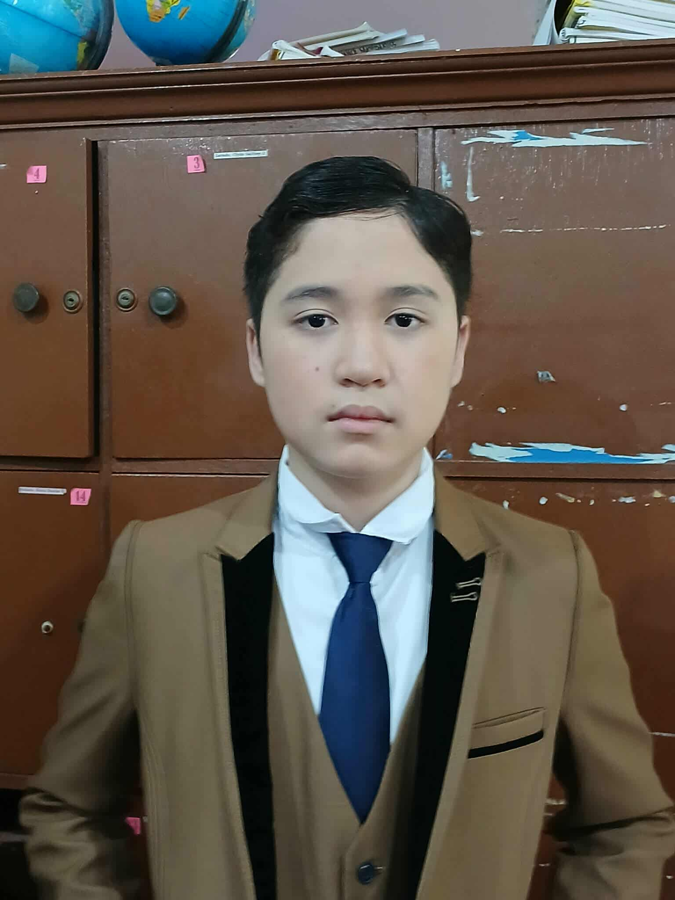

.png)
RTPM-DSHS
Dumaguete Science High School
Dumaguete Science High School
Scientia et Vita
Nurturing Future Scientists and Leaders Since 1987
Ramon Teves Pastor Memorial – Dumaguete Science High School (RTPM-DSHS) was established in 1987 to provide quality secondary education focused on science and mathematics for academically talented students in Dumaguete City and nearby areas. The school began as a small science class within Dumaguete City National High School before eventually developing its own campus.
We dream of Filipinos who passionately love their country and whose values and competencies enable them to realize their full potential and contribute meaningfully to building the nation.
Maka-Diyos
Maka-Tao
Makakalikasan
Makabansa
To protect and promote the right of every Filipino to quality, equitable, culture-based, and complete basic education where:
Students learn in a child-friendly, gender-sensitive, safe, and motivating environment.
Teachers facilitate learning and constantly nurture every learner.
Administrators and staff, as stewards of the institution, ensure an enabling and supportive environment for effective learning to happen.
Family, community, and other stakeholders are actively engaged and share responsibility for developing life-long learners.
RTPM-DSHS offers a specialized curriculum focused on science, mathematics, and technology. The school provides strong STEM education through its Junior and Senior High School programs, along with opportunities in foreign language learning, research, robotics, and advanced mathematics. Students also participate in work immersion programs that allow them to gain real-world experience in science-related fields.
The Junior High School program provides students with a strong foundation in science, mathematics, and research through an enriched and advanced curriculum. It is designed to develop students’ analytical thinking, problem-solving abilities, and scientific curiosity through laboratory activities, research projects, and collaborative learning. The program encourages students to explore different scientific concepts and apply them to real-life situations, preparing them for higher-level studies in science and technology.
The Senior High School program emphasizes the STEM track, allowing students to explore advanced scientific concepts, conduct research projects, and participate in work immersion programs that provide real-world experience in science-related fields. The Science, Technology, Engineering, and Mathematics (STEM) strand prepares students for future careers in scientific and technological fields. It offers specialized subjects that focus on advanced mathematics, science, and research, allowing students to deepen their understanding of these disciplines. Through hands-on activities, experiments, and research-based learning, the STEM strand equips students with the knowledge, critical thinking skills, and innovation needed for college programs related to engineering, medicine, information technology, and other STEM-related professions.
School Name: Ramon Teves Pastor Memorial – Dumaguete Science High School
Address: Maria Asuncion Village, Daro, Dumaguete City, Negros Oriental, Philippines
Phone: (035) 225-3509, 422-5311
Email: rtpm.dshs.7@gmail.com
Location:87FV+2W6, Saint Ignatius street, Dumaguete City, Negros Oriental
Elianna Nicasio
Head Developer
Calix Quinit
Assistant Developer
Leanne Duran
Front-end Engineer
Elianna Talorete
Back-end Engineer
Tosh Benito
Project Manager
Antoinette Steyer
Researcher

Robb Mann
Researcher